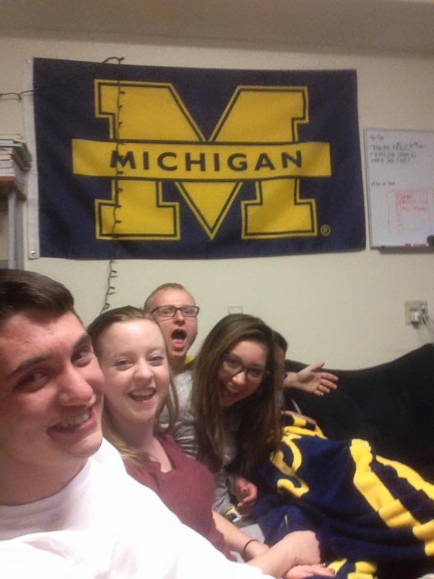
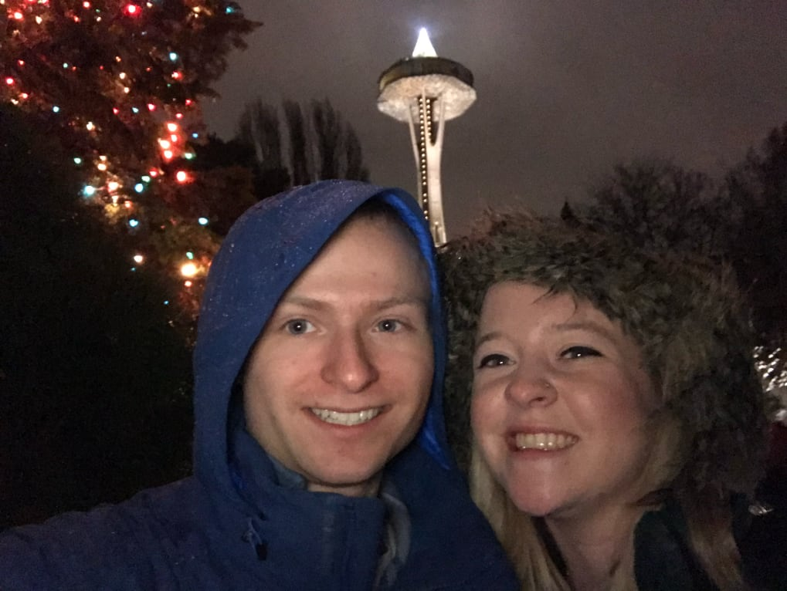
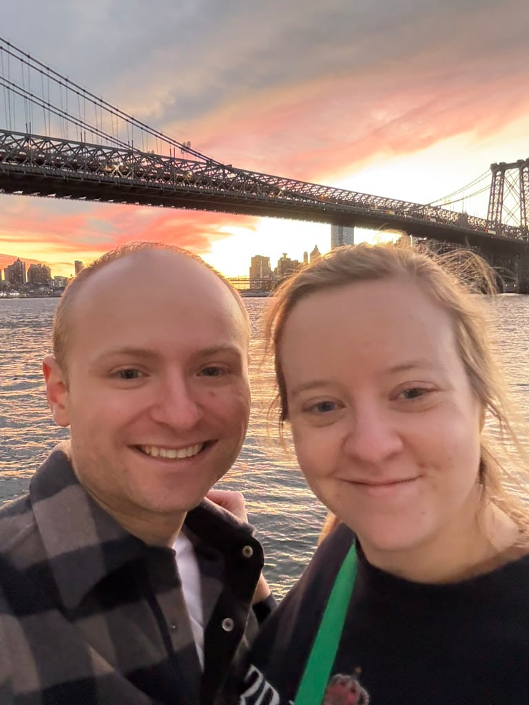
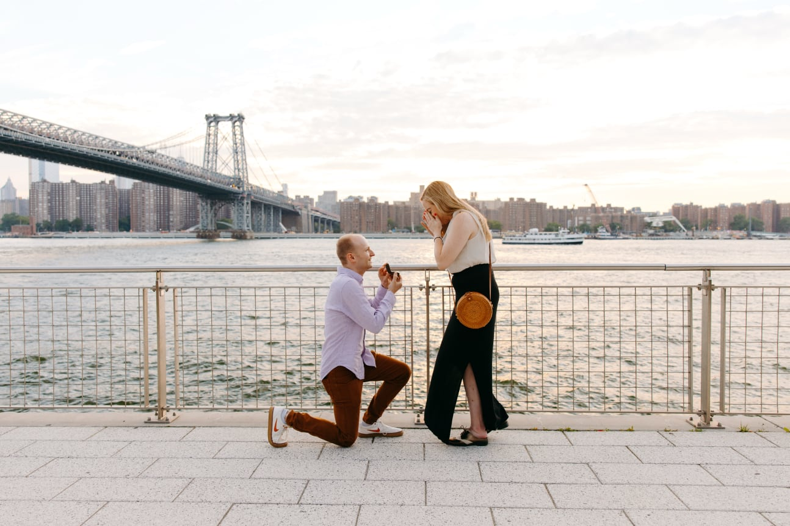

How We Met
We first met in 2014 while both attending the University of
Michigan (Go Blue!) after moving into the same floor of a
learning community (shoutout MCSP). While there were
initial sparks, Josh ‘had an internship that summer, so he
couldn’t commit to a relationship right then.’ Bummer.
How We Started Dating
In 2016, we moved into a group house with friends off
campus, because that sounded like a great idea with no
romantic risks whatsoever. A month later, we were dating
(there were bets placed on how long it would take). Thanks
to our friends for putting up with how annoying (&
cute?) we were.

How We Made it Work Long Distance
After graduation, Josh moved to Seattle for work in 2017.
Megs visited him on long weekends her senior year, because
no studying was happening anyway. She graduated a year
later and moved to Washington, D.C. That made ours a tale
of two Washingtons and lots of redeye flights. We were long
distance for two years, until Josh moved to New York in
2019 (then we were short distance).
How We Survived COVID
During the pandemic, we temporarily moved in together in
Ann Arbor (thanks for housing us, parents, and for waiting
for our return, friends and roommates!). 2020 was horrible,
but living together wasn’t, especially when we didn’t have
to commit to joint rent.

How We Finally Moved In Together
In 2021, Josh moved back to New York and Megs moved back to
D.C., with the promise of picking a city and (finally)
moving in together in a year. In 2022, the allure of
overpaying for everything, subway rats, and a shoebox
apartment won out, and Megs moved to Brooklyn to live with
Josh, officially entering our DINK era.

How We Proposed
Two years and one small black cat later (hi, Ginny), Josh
proposed to Megs in Domino Park in July 2024. She ordered
two desserts at dinner, oblivious, as Josh ‘went to the
bathroom’ five times to text and stall the photographer.
Megs then proposed to Josh on a hike in Leelanau later that
summer (Josh was also oblivious, although he shouldn’t have
been, since Megs doesn’t hike for any other reason). After
a long, handwritten speech (Megs) and lots of crying
(Josh), he also said yes!
How We’re Doing Now
We’re overjoyed to finally get married after what will be
10 years of dating and 12 years of knowing each other. We
could not be more grateful for all of our loved ones for
their support and friendship over the years, and we’re
ecstatic to have you all join us in Suttons Bay to
celebrate this next chapter. See you on August 1, 2026!

How Ginny is Doing Now
She'd like some food!